Midwest Speech and Language Days (MSLD) is a 2-day meeting that continues and expands upon the tradition of Illinois Speech Day and the Midwest Computational Linguistics Colloquium.
Presenters and attendees come from Midwest universities and research institutions.
The goal is to increase awareness of speech and language research going on in the region and to foster collaboration among sites.
MSLD 2019 was held May 2-3, 2019 at Toyota Technological Institute at Chicago. Thanks to all who participated!
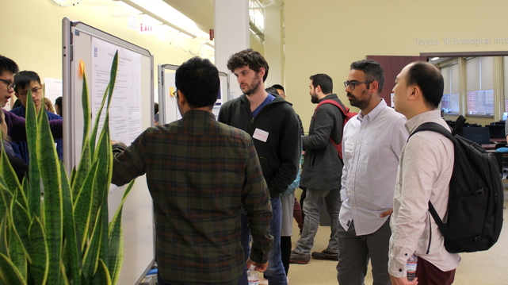
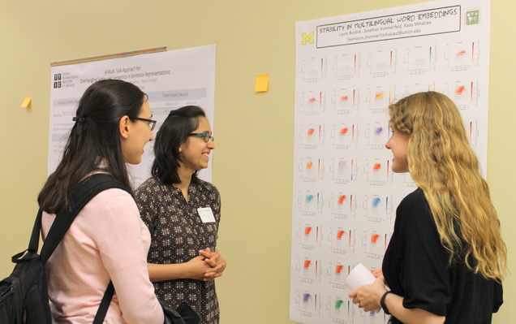
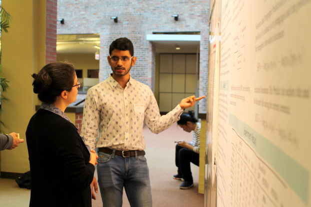
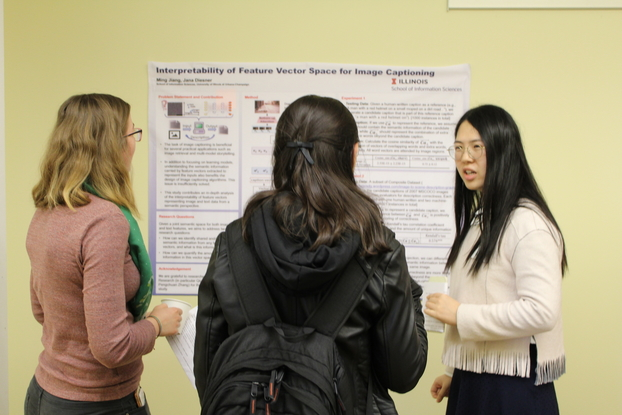
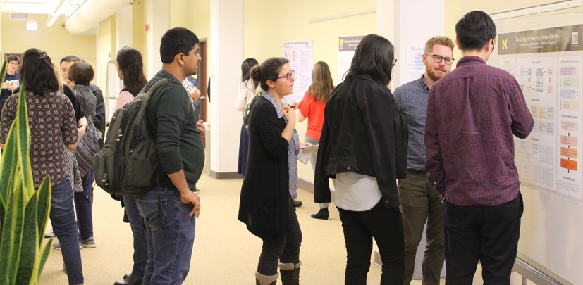
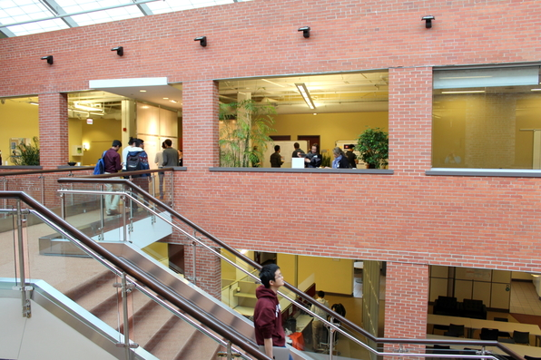
Keynote Speakers:
David Chiang, University of Notre Dame
Tal Linzen, Johns Hopkins University
Organizers:
Allyson Ettinger, TTIC
Kevin Gimpel, TTIC
Karen Livescu, TTIC
Karl Stratos, TTIC
Sam Wiseman, TTIC
Details:
Talks: Talk slots are 20 minutes and include 15 minutes for the talk and 5 for questions/switching presenters.
Posters: Posters can be at most 4 feet by 6 feet.
Parking:
There is free parking in the commuter parking lot at 60th St and Stony Island Ave and free street parking on many streets near TTIC (just beware of "permit parking" and "street cleaning" signs!). Parking can be found on 61st Street (between Woodlawn Ave and Blackstone Ave) and on Dorchester Street (between 60th and 61st Streets).
Schedule:
Thursday, May 2
10:00-11:00 Breakfast (catered at TTIC) + poster session
11:00-12:20 Talk session (Chair: Karen Livescu)
11:00 Cristina Noujaim, Jenni Jasperse, Emily Durie (UMichigan) - EmojiPoch: A Novel Approach to Emoji Epoch Prediction
11:20 Shubhanshu Mishra, Jana Diesner (UIUC) - Multi-dataset-multi-task neural sequence tagging for information extraction from tweets
11:40 Yihong Theis, William Hsu (KSU) - Learning to Detect Named Entities in Mixed-code Bilingual Open speech Corpora
12:00 Jeffrey Geiger, Ming Xiang (UChicago) - Toward a probabilistic account of emphasis licensing
12:20-2:00 Lunch (catered at TTIC) + poster session
2:00-3:00 Keynote: David Chiang (Notre Dame) - Automatic Augmentation of Language Documentation
3:00-3:30 Break + poster session
3:30-4:30 Talk session (Chair: Jana Diesner)
3:30 Leda Sari, Samuel Thomas, Mark Hasegawa-Johnson (UIUC) - Speaker Adaptation of Hidden Layers by Speaker Aware Offsets
3:50 Shane Settle, Kartik Audhkhasi, Karen Livescu, Michael Picheny (TTIC) - Acoustically Grounded Word Embeddings for Improved Acoustics-to-Word Speech Recognition
4:10 Ali Abavisani, Mark Hasegawa-Johnson (UIUC) - Perceptual Measure Estimation for Noise Robustness on Speech Phones
4:30-5:00 Break + poster session
5:00-6:00 Talk session (Chair: Karl Stratos)
5:00 Mounica Maddela, Wei Xu (OSU) - A Word-Complexity Lexicon and A Neural Readability Ranking Model for Lexical Simplification
5:20 Damir Cavar, Oren Baldinger, et al. (IU) - Generating Dynamic Knowledge Graphs from Text using Deep and Broad NLP
5:40 Rezvaneh Rezapour, Saumil Shah, Jana Diesner (UIUC) - Enhancing the Measurement of Social Effects by Capturing Morality
6:15 Optional group dinner at nearby restaurant; depart TTIC at 6:15pm
Thursday Posters:
Yiting Shen, Steven Wilson, Rada Mihalcea - Measuring Personal Values in Cross-Cultural User-Generated Content
Mingda Chen, Zewei Chu, Kevin Gimpel - Evaluation Benchmarks and Learning Criteria for Discourse-Aware Sentence Representations
Natawut Monaikul, Barbara Di Eugenio - Automatically Detecting Preposition Errors to Identify Interlingual Errors in Essays
Lifu Tu, Kevin Gimpel - Benchmarking Approximate Inference Methods for Neural Structured Prediction
Mingda Chen, Qingming Tang, Sam Wiseman, Kevin Gimpel - A Multi-Task Approach for Disentangling Syntax and Semantics in Sentence Representations
Shira Eisenberg, Sam Wiseman - Outperforming Long-form Neural Abstractive Summarizers with Simple, Unsupervised Baselines
Tyler Amos - Applications of Audio Data to Describe Affect in Online Debates on Migration and Multiculturalism
Laura Biester, Carmen Banea, Rada Mihalcea - The Applicability of Embeddings to Location Time Series Data
Shubham Toshniwal, Allyson Ettinger, Karen Livescu - Inter-Language Relationships in Cross-Lingual Embedding Spaces
Steven Wilson, Rada Mihalcea - Predicting Human Activities from User-Generated Content
Ming Jiang, Jana Diesner - Interpretability of Feature Vector Space built for Image Captioning
Bowen Shi, Aurora Martinez del Rio, Jonathan Keane, Greg Shakhnarovich, Diane Brentari, Karen Livescu - Fingerspelling recognition in the wild with iterative visual attention
Laura Burdick, Jonathan Kummerfeld, Rada Mihalcea - Stability for Multilingual Word Embeddings
Jialu Li, Mark Hasegawa-Johnson - A Comparable Phone Set for the TIMIT Dataset Discovered in Clustering of Listen, Attend and Spell
Deblin Bagchi, William Hartmann - Learning from the best: A teacher-student multilingual framework for low-resource languages
Santiago Castro, Devamanyu Hazarika, Verónica Pérez-Rosas, Roger Zimmermann, Rada Mihalcea, Soujanya Poria - Multimodal Sarcasm
Friday, May 3
9:00-10:00 Breakfast (catered at TTIC) + poster session
10:00-11:00 Keynote: Tal Linzen (JHU) - Assessing syntactic generalization in neural NLP systems
11:00-11:30 Break + poster session
11:30-12:10 Talk session (Chair: Barbara Di Eugenio)
11:30 Yatri Modi, Natalie Parde (UIC) - Visual Storytelling: Errors and Improvements
11:50 Freda Shi, Jiayuan Mao, Kevin Gimpel, Karen Livescu (TTIC) - Visually Grounded Neural Syntax Acquisition
12:10-2:00 Lunch (catered at TTIC) + poster session
2:00-3:00 Talk session (Chair: Natalie Parde)
2:00 Lifu Tu, Yuanzhe Pang, Kevin Gimpel (TTIC) - Learning Approximate Inference Networks and Structured Prediction Energy Networks
2:20 Sarah Ewing, Amad Hussain, David L. King, Michael White (OSU) - Ranking Automatic Paraphrases with Contextualized Word Embeddings
2:40 Itika Gupta, Barbara Di Eugenio, Brian Ziebart, Bing Liu, Ben Gerber, Lisa Sharp (UIC) - Modeling Conversation Flow in Health Coaching Dialogues for Behavioral Goal Extraction
3:00 Closing
Friday Posters:
Mingda Chen, Qingming Tang, Sam Wiseman, Kevin Gimpel - Controllable Paraphrase Generation with a Syntactic Exemplar
Damir Cavar, Oren Baldinger, et al. - Unification and Standardization of NLP-pipelines for Computational Semantics using Scalable Microservices
Oana Ignat, Laura Burdick, Jia Deng, Rada Mihalcea - Multimodal Action Detection in Online Videos
Ankita Pasad, Bowen Shi, Herman Kamper, Karen Livescu - On the contributions of visual and textual supervision in low-resource semantic speech retrieval
Rezvaneh Rezapour, Jana Diesner - Classification and Detection of Micro-Level Impact of Issue-Focused Documentary Films based on Reviews
Abhinav Kumar - Dialogue Act Classification for Exploratory Data Visualization Dialogue Exploration
Michael Chen, Mike D'Arcy, Alisa Liu, Jared Fernandez, Doug Downey - CODAH: An Adversarially-Authored Question Answering Dataset for Common Sense
Anna Tendera, Andreas Neef, Thomas Gunter, Nicole Neef, Torrey Loucks - Impaired inhibition in developmental stuttering
Lingyu Gao, Mingda Chen, Kevin Gimpel - Distractor Analysis and Selection for Multiple-Choice Cloze Questions for Second-Language Learners
Charles Welch, Verónica Pérez-Rosas, Jonathan K. Kummerfeld, Rada Mihalcea - Personalized Word Embeddings for Language Modeling and Dialog
E-Ching Ng - Transmission bias: Language contact and sound change
Lifu Tu, Xiaoan Ding, Dong Yu, Kevin Gimpel - An Exploration of Controllable Story Continuation Generation
MeiXing Dong, Rada Mihalcea, David Jurgens, Carmen Banea - Characterizing Perceptions of Social Roles
Falcon Dai, Zheng Cai - Towards Near-imperceptible Steganographic Text
Allie Lahnala, Jonathan Kummerfeld, Rada Mihalcea - Sound of Text
Adam Stiff, Prashant Serai, Eric Fosler-Lussier - Improving Human-Computer Interaction in Low-Resource Settings with Text-to-Phonetic Data Augmentation
Past Events:
MSLD 2018 at the University of Notre Dame
MSLD & MCLC 2017 at TTI-Chicago
MSLD & MCLC 2016 at Indiana University
MSLD 2015 at TTI-Chicago
MSLD 2014 at UIUC
MSLD 2013 at TTI-Chicago
Illinois Speech Day 2012 at TTI-Chicago
Illinois Speech Day 2011 at TTI-Chicago
Illinois Speech Day 2010 at TTI-Chicago
Illinois Speech Day 2009 at TTI-Chicago
MCLC 2009 at Indiana University
MCLC 2008 at Michigan State University
MCLC 2006 at UIUC
MCLC 2005 at The Ohio State University
MCLC 2004 at Indiana University
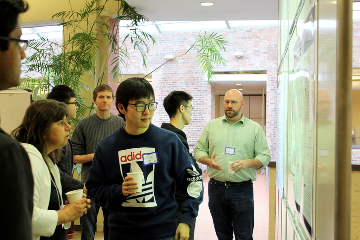
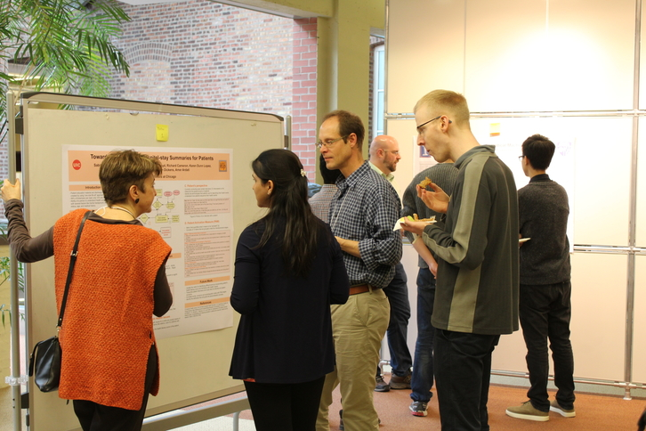
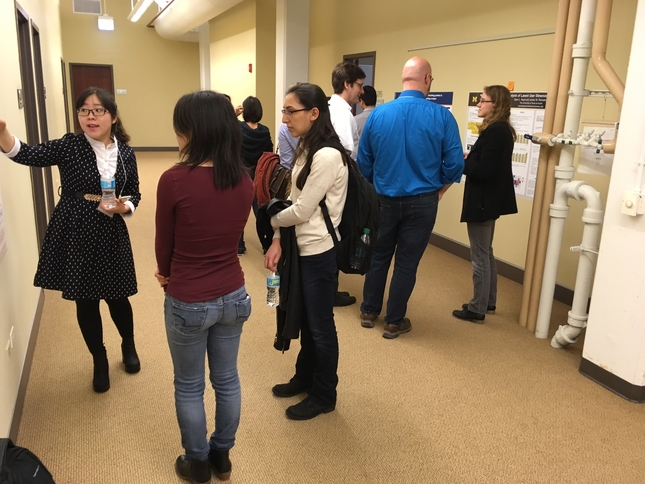
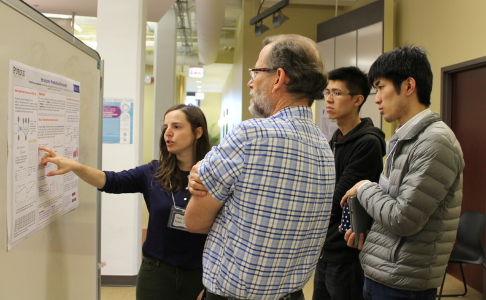
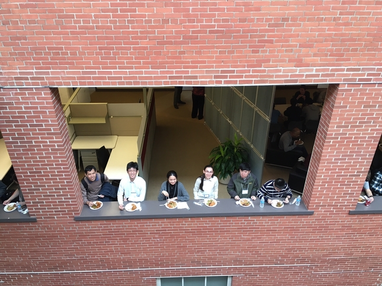
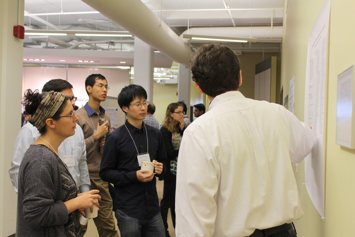
|
|